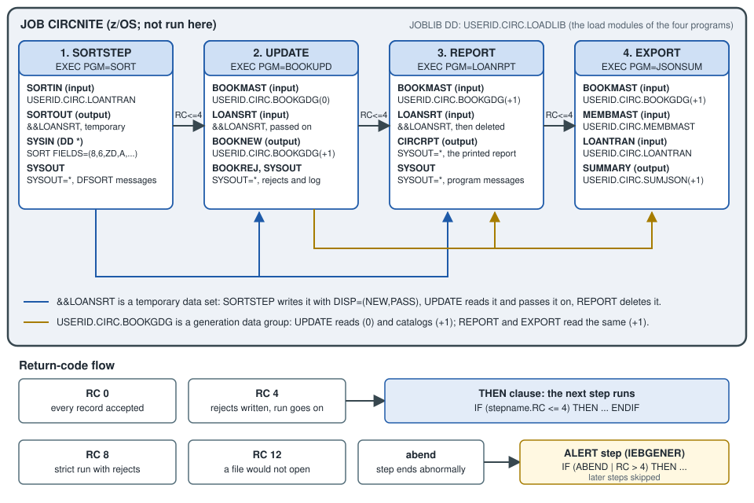

JCL for COBOL Programmers
|
This content was generated with the assistance of AI and should be verified against the official documentation before being relied on in production. |
This page is written against IBM Enterprise COBOL for z/OS 6.5 (PTFs through September 2026) on z/OS 3.2, where batch work is described in Job Control Language (JCL); against ISO/IEC 1989:2023 (edition 3, January 2023; an upcoming 4th edition is in ballot), which says nothing about JCL, because JCL is an operating-system language and not part of COBOL; and against GnuCOBOL 3.2 (28 July 2023, the latest release), with which the one portable program on this page was compiled with cobc -x -Wall and run on 2026-10-20 (and again with -std=ibm). JCL has no portable equivalent and cannot be run on a workstation, so every JCL and IDCAMS listing here is labelled "z/OS; not run here" and was checked statement by statement against the z/OS 3.2 MVS JCL Reference (the PDF’s cover page reads "Last updated: 2026-09-21"), the DFSMS Using Data Sets and Access Method Services Commands books for z/OS 3.2, and the Enterprise COBOL 6.5 Programming Guide.
A COBOL program never says where its files are: ASSIGN TO BOOKMAST names a DD name, and the JCL of the job step connects that name to a data set, a spool class, in-stream data or nothing at all. So a COBOL programmer on z/OS has to read and write JCL as surely as a Java programmer has to read a build file. This page covers the statements that matter, how return codes steer a job, procedures and symbols, generation data groups, restart, the IBM compile procedures, the Circulation nightly job as a whole, and submitting a job from a workstation with Zowe CLI. The environment itself (data sets, ISPF, SDSF, the spool) is on Mainframe Environment Primer; the compiler options, the binder and Language Environment are on Compiling, Linking and Language Environment; data set allocation and utilities such as IDCAMS and IEBGENER are on Datasets and Mainframe Utilities; the COBOL side of the files is on File Concepts, SELECT and FD and Sequential Files; and the sort used in the nightly job is on Sort and Merge.
Where the book is outdated: Taulli’s Modern Mainframe Development (2022, chapters 3 and 5) introduces JCL with a first job that sorts a data set with DFSORT, and shows the batch flow around a COBOL program; those ideas are still current. What has moved is the context. The book works on z/OS 2.4, while this page is checked against the z/OS 3.2 manuals, and its Zowe commands and prerequisites belong to the Zowe v1 era, while the commands below are the ones in the current Zowe 3.x documentation. Its JCL is also a survey: the IF/THEN/ELSE/ENDIF construct, generation data groups with relative numbers, symbolic parameters and restart are covered here from the IBM manuals.
How a job is built
A job is a stream of 80-column records. Each JCL statement starts with // in columns 1 and 2 and has up to four fields separated by blanks: the optional name, the operation (JOB, EXEC, DD, IF, …), the parameters and optional comments. A statement that does not fit before column 72 is continued by ending the line after a complete parameter and its comma, and starting the next line with // followed by a blank, with the parameters resuming in columns 4 to 16. Comment, null, delimiter and JCL command statements cannot be continued. The statements a COBOL programmer meets are:
| Statement | Purpose |
|---|---|
|
Starts a job: its name, accounting information, job class, where the job log goes ( |
|
Starts a job step: runs a program ( |
|
Describes one data set, in-stream data set, spool data set or dummy data set that the step uses, under a DD name that the program refers to |
|
Begin and end an in-stream procedure, a reusable group of steps with symbolic parameters |
|
Run steps conditionally on return codes, abends and whether a step ran |
|
Assign a symbol a value, and name the libraries searched for procedures |
|
A comment line |
|
Ends in-stream data |
|
Ends the job |
The names of jobs, steps and DDs are one to eight characters. The output of a batch job is a collection of three data sets that the system always produces: the JES job log (JESMSGLG), the statement images (JESJCL) and the system messages (JESYSMSG); MSGLEVEL controls how much is printed in the last two. In the system messages the messages IEF142I and IEF472I mark the normal and the abnormal end of a step, and the IEF285I messages tell what happened to each data set (kept, deleted, cataloged). Those are the first things to read when a job misbehaves.
The JOB statement
Every job starts with one JOB statement:
//CIRCNITE JOB (ACCT),'CIRC NIGHTLY',CLASS=A,MSGCLASS=H,
// NOTIFY=&SYSUID,REGION=0MCIRCNITE is the job name, (ACCT) the installation’s accounting field, the quoted text the programmer name, CLASS the job class that selects the initiators (and the resource limits) the installation set up, MSGCLASS the output class of the job log, NOTIFY the user to tell when the job ends (&SYSUID is a system symbol that is replaced by the submitting user), and REGION=0M asks for all the available storage. The class, the message class and the accounting field are installation conventions; the values here are placeholders. RESTART= (covered below) and GDGBIAS= (generation data groups, below) are also JOB parameters.
The EXEC statement: PGM, PROC, PARM and COND
An EXEC statement starts a step. PGM=name runs the load module or program object name, which the system looks for in the step’s STEPLIB, then the job’s JOBLIB, then the system libraries (see the section on libraries below). PROC=name, or simply //STEPNAME EXEC name, calls a procedure instead. The other parameters used most often are:
| Parameter | Meaning |
|---|---|
|
Passes up to 100 characters to the program. The text may contain special characters if it is in apostrophes; an apostrophe or an ampersand that is part of the text is coded twice ( |
|
The older return-code test, explained in the section on return codes below |
|
The storage and processor time the step may use |
|
On an |
The program receives PARM as a halfword length followed by the characters. In Enterprise COBOL 6.5 it is described in a LINKAGE SECTION item and named in PROCEDURE DIVISION USING. The next fragment is original code following the pattern of the Programming Guide (z/OS; not run here):
LINKAGE SECTION.
01 OS-PARM.
05 PARM-LEN PIC S9(4) COMP.
05 PARM-STRING PIC X(100).
PROCEDURE DIVISION USING OS-PARM.
IF PARM-LEN >= 6 AND PARM-STRING(1:6) = "STRICT"
SET STRICT-RUN TO TRUE
END-IFThe step that runs it is:
//CHECK EXEC PGM=LOANCHECK,PARM='STRICT/'The / at the end is not decoration. The parameter string can carry program arguments, Language Environment runtime options or both, separated by a slash. With the CBLOPTS(ON) runtime option, which is the default, the program arguments come first and the runtime options after the slash, so 'STRICT/' says "this argument, and no runtime options". For an AMODE 64 program CBLOPTS is no longer supported and the order is the other way round, runtime options first. The Programming Guide’s own example passes '95/' and prints a parm-len of 2. GnuCOBOL has no PARM: the portable equivalent is ACCEPT ... FROM COMMAND-LINE, used in the program below.
The DD statement
A DD statement has a DD name in its name field and describes one data set. The DD name is what the program uses: in COBOL, SELECT BOOK-FILE ASSIGN TO BOOKMAST in the FILE-CONTROL paragraph means that the step must have a //BOOKMAST DD statement, and a missing DD name is a run-time failure at OPEN (typically a file status of 35, see File Status Codes). The parameters that matter most:
| Parameter | Meaning |
|---|---|
|
The data set name: up to 44 characters in qualifiers of up to eight, a PDS or PDSE member as |
|
Whether the data set exists and is shared, and what happens to it at the end of the step (see below) |
|
The device class (an installation-defined name such as |
|
Space for a new data set (see below) |
|
The record format, record length and block size of a new data set. The |
|
A spool (print) data set; |
|
In-stream data |
|
No data set at all |
DISP: status and what happens afterwards
DISP=(status,normal-end,abnormal-end) is the parameter that most often decides whether a job step runs. The status says what the step expects:
| Status | Meaning |
|---|---|
|
The step creates the data set (the default when |
|
The data set exists and the step needs exclusive use |
|
The data set exists and the step only reads it, so other jobs may read it too |
|
Add to the end of an existing data set, or create it if it does not exist |
The disposition after a normal end and after an abend is one of KEEP, DELETE, CATLG, UNCATLG or (for the normal end only) PASS, which keeps the data set for a later step of the same job. The defaults are worth knowing because they cause both of the most common mistakes: if the status is omitted it is NEW; if the normal-end disposition is omitted it is DELETE for a new data set and KEEP for an existing one; and if DISP is omitted altogether the data set is new and is deleted at the end of the step, which is exactly right for a work file and exactly wrong for a file you wanted to keep. The abnormal-end disposition defaults to the normal one, except that after PASS it is DELETE for a new data set and KEEP for an existing one.
The pattern for a new output file is therefore:
//BOOKNEW DD DSN=USERID.CIRC.BOOKNEW,DISP=(NEW,CATLG,DELETE),
// RECFM=FB,LRECL=60,SPACE=(TRK,(5,1)),UNIT=SYSDAIt creates the data set, catalogs it if the step ends normally and deletes it if the step abends, so a failed run leaves no half-written master behind. A job that reruns after such a failure finds no data set with that name and can run again; a job that reruns after success fails with a duplicate-name error unless an earlier step deletes the old data set or the name is a generation (below). A DISP=SHR input is the usual form for a master read by many jobs; DISP=OLD takes exclusive control, and when any step of a job asks for exclusive control of a data set (NEW, MOD or OLD), the system converts the SHR requests for that data set in the same job to exclusive control too (the manual lists the exceptions).
SPACE, RECFM, LRECL and BLKSIZE
SPACE=(TRK,(5,1)) asks for five tracks, with one more track each time the data set needs another extent; CYL asks in cylinders; a third number in the inner parentheses is the number of directory blocks of a PDS. A size in tracks or cylinders is the usual choice, and with SMS a data class may supply the whole allocation. The remaining attributes describe the records: RECFM=FB is fixed-length records, blocked, RECFM=VB is variable-length, blocked, and LRECL is the record length. A variable-length record starts with a four-byte record descriptor word that the LRECL includes, so the FD record is four bytes shorter than the LRECL (see Sequential Files). A mismatch between the FD and the LRECL is the classic z/OS run-time problem: the compiler cannot know the data set’s length, and the program fails or truncates at run time (see File Concepts, SELECT and FD). The Circulation master records are 60 bytes (BOOKREC) and the transactions 30 bytes (LOANREC), so their DD statements say RECFM=FB,LRECL=60 and RECFM=FB,LRECL=30. If BLKSIZE is not coded, the system can under certain conditions determine an optimum block size; most shops leave it to the system.
In-stream data and DUMMY
DD * introduces data that follows the statement in the job itself, up to a /* delimiter or the next // statement. It is how control statements reach a utility (SYSIN of IDCAMS or DFSORT) and how a small source member can be compiled without a data set. If a data line itself starts with //, use DD DATA and a DLM= delimiter instead. Without the SYMBOLS= keyword on the DD, JES does not replace symbols inside in-stream data.
//SYSIN DD *
SORT FIELDS=(8,6,ZD,A,14,8,ZD,A),EQUALS
/*DD DUMMY allocates no space and performs no input or output: the system checks the other parameters on the statement for syntax, then ignores DISP and SPACE. It is used to switch a file off in a test, or for a utility’s unused SYSIN. A COBOL program that reads a dummy input file therefore finds it empty; test the FILE STATUS path on the first run. In a procedure, a DD DUMMY can be switched back on by an overriding DD that names the same DSN.
Concatenation
Several input data sets can be read as one by leaving the DD name off every DD statement after the first one:
//LOANTRAN DD DISP=SHR,DSN=USERID.CIRC.LOANTRAN.BRANCH1
// DD DISP=SHR,DSN=USERID.CIRC.LOANTRAN.BRANCH2
// DD DISP=SHR,DSN=USERID.CIRC.LOANTRAN.BRANCH3The program opens LOANTRAN once and reads the three data sets in order, so the nightly run can take the transactions of several branches without a change to the COBOL. The rules are that output data sets cannot be concatenated, that the data sets are processed in the order of the statements, that partitioned data sets (PDS, PDSE and z/OS UNIX directories) concatenate with each other and are the way a SYSLIB or STEPLIB with several libraries is built, and that sequential data sets of the same RECFM and LRECL concatenate freely, while the block sizes may differ. In "unlike" concatenations (different record lengths or formats) the program has to cope with what it reads. For data sets whose records vary in length, the one with the largest LRECL is the one to put first. Overriding a concatenation in a procedure needs one overriding DD per concatenated statement, in the same order, with the DD name on the first only.
Program libraries: JOBLIB and STEPLIB
The program named on EXEC PGM= must be found in a load library. //JOBLIB DD (placed right after the JOB statement) names a private library searched for every step of the job; //STEPLIB DD inside a step names one for that step only. In both, the system searches the private library first and the system libraries (LINKLIST, link pack area) only if the program is not found there. A STEPLIB in a step makes the system ignore the JOBLIB for that step, and several libraries are searched in order if the DD statements are concatenated. A JOBLIB or STEPLIB must be a PDS or PDSE, not a VSAM data set, and is specified with DISP=SHR or OLD. A JOBLIB cannot be placed inside a THEN or ELSE clause; a STEPLIB can. The Circulation job uses a JOBLIB for USERID.CIRC.LOADLIB, which holds the four programs, and relies on the system libraries for SORT (DFSORT is installed with z/OS) and for the Language Environment run-time library that Enterprise COBOL programs need, as described on Compiling, Linking and Language Environment.
Return codes, COND and IF/THEN/ELSE/ENDIF
Every step ends with a return code, a number from 0 to 4095 that tells the job scheduler how the step went. For a COBOL program it is the value of the RETURN-CODE special register at the end of the program, which Enterprise COBOL defines as a signed four-digit binary item with initial value zero, and which is passed to the operating system as a user return code when control returns to it. (The values the operating system accepts may be fewer than the register can hold.) The convention that z/OS programs and IBM’s compilers follow is:
| Return code | Usual meaning |
|---|---|
0 |
The step ended normally |
4 |
A warning or minor problem, for example some rejected records |
8 |
An error: the output is probably wrong or incomplete |
12 |
A severe error, for example a file that would not open |
16 |
A terminal error |
This is a convention, not part of the language: the value is whatever the program moves to RETURN-CODE, and the job decides what to do with it. An abend (for example a system completion code S0C7 for a data exception, or a user code such as U0100) is a different outcome from a return code, and is tested separately.
The next program is the portable part of this page. LOANCHECK validates the day’s transactions and reports the result by return code: 0 if every record is a checkout or a return, 4 if there were rejects, 8 if there were rejects and the caller asked for a strict run, and 12 if the file would not open. The argument stands in for PARM, which GnuCOBOL does not have. Compiled with cobc -x -Wall -I. loancheck.cob (and with -std=ibm), no warnings, it was run four times, with LOANTRAN (the four valid transactions of the Circulation data), with a bad record X appended, with the argument STRICT, and with the file missing, and the shell’s exit status is shown after each run:
* LOANCHECK - validate the day's loan transactions and report
* the result to the caller as a return code (0, 4 or 8).
IDENTIFICATION DIVISION.
PROGRAM-ID. LOANCHECK.
ENVIRONMENT DIVISION.
INPUT-OUTPUT SECTION.
FILE-CONTROL.
SELECT LOAN-FILE ASSIGN TO "LOANTRAN"
ORGANIZATION IS LINE SEQUENTIAL
FILE STATUS IS WS-FS.
DATA DIVISION.
FILE SECTION.
FD LOAN-FILE.
COPY LOANREC.
WORKING-STORAGE SECTION.
01 WS-FS PIC XX.
01 WS-ARG PIC X(8) VALUE SPACES.
01 WS-EOF PIC X VALUE "N".
88 AT-END-OF-FILE VALUE "Y".
01 WS-OK PIC 9(4) VALUE 0.
01 WS-REJECTED PIC 9(4) VALUE 0.
PROCEDURE DIVISION.
MAIN-PARA.
ACCEPT WS-ARG FROM COMMAND-LINE
OPEN INPUT LOAN-FILE
IF WS-FS NOT = "00"
DISPLAY "LOANCHECK: cannot open LOANTRAN, status " WS-FS
MOVE 12 TO RETURN-CODE
STOP RUN
END-IF
PERFORM UNTIL AT-END-OF-FILE
READ LOAN-FILE
AT END
SET AT-END-OF-FILE TO TRUE
NOT AT END
IF LOAN-CHECKOUT OR LOAN-RETURN
ADD 1 TO WS-OK
ELSE
ADD 1 TO WS-REJECTED
END-IF
END-READ
END-PERFORM
CLOSE LOAN-FILE
DISPLAY "LOANCHECK: " WS-OK " accepted, "
WS-REJECTED " rejected"
EVALUATE TRUE
WHEN WS-REJECTED = 0
MOVE 0 TO RETURN-CODE
WHEN WS-ARG = "STRICT"
MOVE 8 TO RETURN-CODE
WHEN OTHER
MOVE 4 TO RETURN-CODE
END-EVALUATE
STOP RUN.--- clean file
LOANCHECK: 0004 accepted, 0000 rejected
rc=0
--- file with one bad record
LOANCHECK: 0004 accepted, 0001 rejected
rc=4
--- argument STRICT
LOANCHECK: 0004 accepted, 0001 rejected
rc=8
--- missing file
LOANCHECK: cannot open LOANTRAN, status 35
rc=12The copybook is LOANREC of Copybooks and REPLACE. On z/OS the same program needs two changes: ASSIGN TO LOANTRAN (a DD name, without the quotes and the LINE SEQUENTIAL organization, because the data set is a QSAM data set), and the PARM linkage shown earlier instead of ACCEPT ... FROM COMMAND-LINE. The missing-file case of this test gave status 35 in GnuCOBOL; on z/OS a missing DD statement shows up at the same OPEN, and the status codes and messages to check are on File Status Codes.
Source: Enterprise COBOL for z/OS 6.5 Language Reference: RETURN-CODE special register; GnuCOBOL 3.2 manual
COND on the EXEC statement
The older way to use return codes is COND=(code,operator,stepname) on the EXEC of the later step. The test reads backwards, which is why it confuses everyone: the step is bypassed if the test is true. COND=(4,LT,SORTSTEP) means "bypass this step if 4 is less than the return code of SORTSTEP`", that is, run it only if `SORTSTEP ended with 4 or less. The table is the manual’s summary:
| Test | Step runs when | Step is bypassed when |
|---|---|---|
|
code ⇐ RC |
code > RC |
|
code < RC |
code >= RC |
|
code does not equal RC |
code equals RC |
|
code >= RC |
code < RC |
|
code > RC |
code ⇐ RC |
|
code equals RC |
code does not equal RC |
If no step name is given, all previous steps are tested, and several tests in parentheses are combined with "or": the step is bypassed if any one is satisfied. By default a step with a COND is also not run if an earlier step abended; EVEN and ONLY change that (EVEN runs the step whether or not an earlier step abended, ONLY runs it only after an abend, in both cases subject to the return-code tests). The IBM procedures use it: the LKED step of IGYWCL has COND=(8,LT,COBOL), so the link edit runs unless the compile ended with a return code above 8.
IF/THEN/ELSE/ENDIF
The IF construct reads in the order a programmer expects and is what new JCL should use. The syntax is:
//name IF (relational-expression) THEN
// ... steps run when the expression is true
// ELSE
// ... steps run when it is false
// ENDIFA small example with an ELSE clause, in which a validation step decides between the update and the alert (the program names are those of this page; z/OS; not run here):
//CHECK EXEC PGM=LOANCHECK,PARM='STRICT/'
//LOANTRAN DD DISP=SHR,DSN=USERID.CIRC.LOANTRAN
// IF (CHECK.RC = 0) THEN
//UPDATE EXEC PGM=BOOKUPD
// ELSE
//ALERT EXEC PGM=IEBGENER
// ENDIF
//* the DD statements of the steps are omitted hereThe relational expression compares a keyword with a number: RC (a return code, 0 to 4095), stepname.RC, ABEND, ABENDCC=S0C7 or ABENDCC=U0100 (an abend completion code), and stepname.RUN (the step started). The operators are =, >, <, >=, <=, ¬=, ¬>, ¬< (or EQ, GT, LT, GE, LE, NE, NG, NL), NOT (¬), & (and) and | (or); & and | need a blank on each side, and parentheses control the order. Without a step name RC is the highest return code of the steps that have run so far. The rules that cause the surprises are these:
-
A
THENorELSEclause must contain at least oneEXECstatement, andIFconstructs nest up to 15 levels.JOB,JCLLIB,JOBLIBandXMITstatements cannot be inside one. -
If a step named in the expression did not start, that part of the expression is false. This is how the
ELSEclause can run because a step was skipped, and it matters for restart (below). -
After an abend, the steps inside an
IFconstruct do not run by default, in theTHENclause or in theELSEclause, unless the expression namesABEND,ABENDCCor¬ABEND. A clean-up or alert step that must run after a failure therefore has its ownIFthat testsABEND. -
When a step has both a
CONDand an enclosingIF, it runs only if both say so. -
The result of an
IF, once determined, is not re-examined at a later step. -
All the
DDstatements of a step that runs are allocated, so a data set that an earlier, skipped step would have created is a problem for the steps that need it.
Procedures and symbolic parameters
A procedure is a group of steps with placeholders called symbolic parameters, written &NAME in the JCL. It is cataloged (a member of a procedure library, called by its name) or in-stream (between PROC and PEND right after the JOB statement). The PROC statement gives each symbol a default, and the EXEC that calls the procedure overrides it:
//CIRCSORT PROC HLQ=USERID,TRAN=LOANTRAN
//SORT EXEC PGM=SORT
//SYSOUT DD SYSOUT=*
//SORTIN DD DISP=SHR,DSN=&HLQ..CIRC.&TRAN
//SORTOUT DD DSN=&&LOANSRT,DISP=(NEW,PASS),UNIT=SYSDA,
// RECFM=FB,LRECL=30,SPACE=(TRK,(5,1))
//SYSIN DD *
SORT FIELDS=(8,6,ZD,A,14,8,ZD,A),EQUALS
/*
// PEND
//STEP1 EXEC CIRCSORT,TRAN=LOANTRANThe substitution rules are the part that people trip over. A symbol’s name ends at a period, and the period is dropped, so &HLQ..CIRC is USERID.CIRC: the first period ends the symbol, the second is the one that appears in the name. Values with special characters are enclosed in apostrophes, a value with a matched pair of parentheses such as (NEW,KEEP) is not, and a symbol can be nullified by assigning it nothing (TRAN=). The SET statement assigns a symbol a value in the job itself (// SET HLQ=USERID). With MSGLEVEL=(1,1) the IEF653I messages of the job log show the values every symbol received.
A step in a called procedure is changed from the calling EXEC and the statements that follow it, always by naming the procedure step, a period and the DD name:
//STEP1 EXEC CIRCSORT,PARM.SORT='MSG=AP'
//SORT.SORTIN DD DISP=SHR,DSN=USERID.CIRC.LOANTRAN.BRANCH2An overriding DD replaces, nullifies or adds parameters to the procedure’s DD of that name; a DD with a new name is added to the step. The PGM parameter cannot be overridden. The overrides must follow the calling EXEC in the order of the procedure steps, an override that does not name a step applies to the step named in the previous override (or the first step), and a PARM.stepname on the EXEC replaces the procedure step’s PARM. A catalogued procedure is found through the libraries named in a JCLLIB ORDER=(lib1,lib2) statement (up to 15, searched in that order before the system procedure libraries), or in the system defaults.
Generation data groups
A generation data group (GDG) is a family of data sets under one name, one per run, that the system keeps in order: USERID.CIRC.BOOKGDG has generations whose real names are USERID.CIRC.BOOKGDG.G0007V00, .G0008V00 and so on. JCL refers to them by relative generation: USERID.CIRC.BOOKGDG(+1) is the one this job creates, USERID.CIRC.BOOKGDG(0) is the latest that exists, and USERID.CIRC.BOOKGDG(-1) is the one before it. This is what makes a nightly job rerunnable and self-cleaning: last night’s master is (0), tonight’s is (+1), and when a limit is reached the system rolls the oldest generation off the group. The number is signed or zero, has one to three digits, and cannot exceed 255. Omitting the number (DSN=USERID.CIRC.BOOKGDG) reads all the generations as one concatenation.
The group itself, its base, is defined once with IDCAMS (z/OS; not run here):
//DEFGDG EXEC PGM=IDCAMS
//SYSPRINT DD SYSOUT=*
//SYSIN DD *
DEFINE GENERATIONDATAGROUP -
(NAME(USERID.CIRC.BOOKGDG) -
LIMIT(7) -
NOEMPTY -
SCRATCH)
/*LIMIT is the maximum number of generations (1 to 255, or up to 999 with EXTENDED), NOEMPTY removes only the oldest generation when the limit is exceeded (EMPTY removes them all), and SCRATCH deletes the rolled-off data set. (0) fails until a generation exists, so the first one is created by a step with a (+1) DD (an IEFBR14 step is enough). The rules for using the relative numbers in a job are the ones the manuals stress:
-
A relative number refers to the same generation throughout a job:
(+1)created inUPDATEis still(+1)inREPORTandEXPORT, although the system catalogs it at the end of the step that creates it. By default relative references are resolved when the data set is first referenced in the job (GDGBIAS=JOB);GDGBIAS=STEPon theJOBstatement resolves them per step instead. -
A relative number greater than 1 can make absolute generation numbers skip.
-
In a multiple-step job, do not delete a generation and then refer to an older one in a later step, and catalog or uncatalog data sets with JCL rather than with a utility or a program, so that the system does not lose its place in the group.
-
Jobs that use relative numbers and run at the same time on the same GDG are serialized: the system holds the base exclusively if the job uses a
NEWorMODdisposition, and shared if the highest disposition isSHR.
The job step that creates a generation uses DISP=(NEW,CATLG,DELETE) as for any new data set:
//BOOKNEW DD DSN=USERID.CIRC.BOOKGDG(+1),DISP=(NEW,CATLG,DELETE),
// RECFM=FB,LRECL=60,SPACE=(TRK,(5,1)),UNIT=SYSDAThe IBM compile procedures
IBM supplies cataloged procedures that run the Enterprise COBOL compiler, the binder and the program, so that nobody writes the SYSUT1 to SYSUT15 work files by hand. The Programming Guide documents three, and every installation names, places and customizes its own copies, so check the name and the library prefix in the shop’s procedure library:
| Procedure | Steps | What it does |
|---|---|---|
|
|
Compiles a program and writes an object module to |
|
|
Compiles, then link-edits (binds) with |
|
|
Compiles, link-edits and runs the program: the |
The symbols are LNGPRFX (the prefix of the compiler data sets, IGY.V6R5M0 in the Programming Guide) and LIBPRFX (the prefix of the Language Environment data sets, CEE), plus PGMLIB and GOPGM as above. The compiler step runs IGYCRCTL with REGION=0M and its own STEPLIB (the compiler library, then the Language Environment runtime libraries). The caller must supply the source, and a library for COPY:
| DD name | Role |
|---|---|
|
The source program. In the input stream ( |
|
The copy libraries that |
|
The compiler listing, messages and storage map: |
|
The object module, a temporary data set in the procedure, input of the binder |
|
Compiler work files, |
|
Libraries searched by the binder to resolve calls (the Language Environment link libraries |
|
The binder’s input: |
|
The load module or program object produced, a library member |
|
The binder listing |
These two-level names are the way a calling job overrides a procedure: COBOL. and LKED. are the step names, and the DD name follows the period. A complete compile and link followed by a run of the new module, as the developer’s-day section of Mainframe Environment Primer sketches it (z/OS; not run here):
//CIRCBLD JOB (ACCT),'CIRC BUILD',CLASS=A,MSGCLASS=H,
// NOTIFY=&SYSUID
//BUILD EXEC IGYWCL,PARM.COBOL='LIST,MAP,XREF'
//COBOL.SYSIN DD DISP=SHR,DSN=USERID.CIRC.COBOL(LOANCHECK)
//COBOL.SYSLIB DD DISP=SHR,DSN=USERID.CIRC.COPYLIB
//LKED.SYSLMOD DD DISP=SHR,DSN=USERID.CIRC.LOADLIB(LOANCHECK)
//RUN EXEC PGM=LOANCHECK,PARM='STRICT/',
// COND=(8,LT,BUILD.COBOL)
//STEPLIB DD DISP=SHR,DSN=USERID.CIRC.LOADLIB
//LOANTRAN DD DISP=SHR,DSN=USERID.CIRC.LOANTRAN
//SYSOUT DD SYSOUT=*PARM.COBOL replaces the compiler options on the COBOL step only (LIST, MAP and XREF print the listing sections described in Compiling, Linking and Language Environment; the installation’s defaults apply to the options not named). The RUN step is the same program started by name from the library the binder just wrote. Its COND names a procedure step with the stepname.procstepname form. If everything is in one job and the program need not be kept, IGYWCLG does all three steps in one call, and a GO.ddname DD supplies the program’s files:
//CIRCGO JOB (ACCT),'COMPILE AND GO',CLASS=A,MSGCLASS=H,
// NOTIFY=&SYSUID
//CLG EXEC IGYWCLG,GOPGM=LOANCHECK
//COBOL.SYSIN DD DISP=SHR,DSN=USERID.CIRC.COBOL(LOANCHECK)
//COBOL.SYSLIB DD DISP=SHR,DSN=USERID.CIRC.COPYLIB
//GO.LOANTRAN DD DISP=SHR,DSN=USERID.CIRC.LOANTRAN
//GO.SYSOUT DD SYSOUT=*The Programming Guide notes that the assignment name of a COBOL file should match the DD name of the GO step (//GO.DDNAME DD DSN=...). Because the load module lives in the temporary &&GOSET, nothing is kept after the job, which is right for trying a program and wrong for a program the nightly job will call. A compile that finds a problem ends with a return code that depends on the severity of the worst message (the compiler’s severity codes and IGY messages are on Compiling, Linking and Language Environment), and the COND tests of the procedures decide which steps still run.
The Circulation nightly job
Everything above comes together in the batch run that closes each day at the library. It has four steps, each with its own program and files:
-
SORTSTEPsorts the day’s loan transactions by book and date with DFSORT (Sort and Merge), into a temporary data set. -
UPDATErunsBOOKUPD, the balance-line update of Sequential Files, which reads the current generation of the book master and the sorted transactions and writes the next generation, with the rejected transactions on the spool. -
REPORTrunsLOANRPT, the circulation report with control breaks of Reports and Report Writer, over the new master and the sorted transactions. -
EXPORTrunsJSONSUM, the daily summary of JSON GENERATE and PARSE, and writes it as a new generation of a JSON data set.

Each step runs only if the earlier ones ended with a return code of 4 or less; a rejected transaction is a 4, not a reason to stop the night. A last step after the other four alerts the operator after an abend or a return code above 4. The job reads as follows (z/OS; not run here):
//CIRCNITE JOB (ACCT),'CIRC NIGHTLY',CLASS=A,MSGCLASS=H,
// NOTIFY=&SYSUID,REGION=0M
//JOBLIB DD DISP=SHR,DSN=USERID.CIRC.LOADLIB
//*
//* Step 1 - sort the day's transactions by book and date
//SORTSTEP EXEC PGM=SORT
//SYSOUT DD SYSOUT=*
//SORTIN DD DISP=SHR,DSN=USERID.CIRC.LOANTRAN
//SORTOUT DD DSN=&&LOANSRT,DISP=(NEW,PASS),UNIT=SYSDA,
// RECFM=FB,LRECL=30,SPACE=(TRK,(5,1))
//SYSIN DD *
SORT FIELDS=(8,6,ZD,A,14,8,ZD,A),EQUALS
/*
//*
// IF (SORTSTEP.RC <= 4) THEN
//* Step 2 - apply checkouts and returns to the book master
//UPDATE EXEC PGM=BOOKUPD
//BOOKMAST DD DISP=SHR,DSN=USERID.CIRC.BOOKGDG(0)
//LOANSRT DD DSN=&&LOANSRT,DISP=(OLD,PASS)
//BOOKNEW DD DSN=USERID.CIRC.BOOKGDG(+1),DISP=(NEW,CATLG,DELETE),
// UNIT=SYSDA,RECFM=FB,LRECL=60,SPACE=(TRK,(5,1))
//BOOKREJ DD SYSOUT=*
//SYSOUT DD SYSOUT=*
//*
// IF (UPDATE.RC <= 4) THEN
//* Step 3 - print the circulation report
//REPORT EXEC PGM=LOANRPT
//BOOKMAST DD DISP=SHR,DSN=USERID.CIRC.BOOKGDG(+1)
//LOANSRT DD DSN=&&LOANSRT,DISP=(OLD,DELETE)
//CIRCRPT DD SYSOUT=*
//SYSOUT DD SYSOUT=*
//*
// IF (REPORT.RC <= 4) THEN
//* Step 4 - export the daily summary as JSON
//EXPORT EXEC PGM=JSONSUM
//BOOKMAST DD DISP=SHR,DSN=USERID.CIRC.BOOKGDG(+1)
//MEMBMAST DD DISP=SHR,DSN=USERID.CIRC.MEMBMAST
//LOANTRAN DD DISP=SHR,DSN=USERID.CIRC.LOANTRAN
//SUMMARY DD DSN=USERID.CIRC.SUMJSON(+1),DISP=(NEW,CATLG,DELETE),
// UNIT=SYSDA,RECFM=VB,LRECL=1024,SPACE=(TRK,(1,1))
//SYSOUT DD SYSOUT=*
// ENDIF
// ENDIF
// ENDIF
//*
//* Alert the operator after an abend or a return code above 4
// IF (ABEND | RC > 4) THEN
//ALERT EXEC PGM=IEBGENER
//SYSPRINT DD SYSOUT=*
//SYSIN DD DUMMY
//SYSUT1 DD *
CIRCNITE FAILED OR ENDED WITH RC ABOVE 4 - SEE THE JOB LOG
/*
//SYSUT2 DD SYSOUT=*
// ENDIF
//The points that make this a realistic job are worth reading in turn:
-
The assignment names in the programs are the DD names. The programs of the other pages used names such as
"SUMMARY.JSON"that suit GnuCOBOL; on z/OS they areASSIGN TO SUMMARYand theSUMMARYDD above, and the data sets are QSAM data sets, notLINE SEQUENTIALfiles. TheLRECLofSUMMARYmust be large enough for the longest line the program writes, and the code page of the JSON text is the program’s (see JSON GENERATE and PARSE). -
&&LOANSRTis passed from step to step:DISP=(NEW,PASS)inSORTSTEP,(OLD,PASS)inUPDATE,(OLD,DELETE)inREPORT. A temporary data set exists only for the job that created it, which matters for restart (below). -
BOOKGDG(0)is read andBOOKGDG(+1)is created in the same step, and the steps after it read(+1): the same relative number for the whole job. -
The sorted
LOANSRTis also whatREPORTreads, which is whyUPDATEpasses it on instead of deleting it. The unsortedLOANTRANis still read byEXPORTto count the day’s transactions. -
The final
IFmentionsABEND, so it can run after an abend, which noIFthat only testsRCcan. BecauseRCwithout a step name is the highest return code so far,RC > 4is true after a step 8 or 12 even though the step that failed is not named. IfUPDATEended with 4 (rejects), the report and the export run and the alert does not, which is the intention. -
The
//null statement at the end ends the job.
The size of SPACE, the job class and the data class are the installation’s. The SORT step needs no work data sets here because DFSORT allocates them dynamically in current installations (see Sort and Merge), and the control statement SORT FIELDS=(8,6,ZD,A,14,8,ZD,A),EQUALS sorts on the six-digit book number at byte 8 and the eight-digit date at byte 14 of the LOANREC record, both ascending, keeping the original order of equal keys.
Restart
When the update step fails at three in the morning, the operator does not want to sort the file again, and above all does not want to apply the day’s transactions twice. A job can be resubmitted to start at a given step with the RESTART parameter of the JOB statement:
//CIRCNITE JOB (ACCT),'CIRC NIGHTLY',CLASS=A,MSGCLASS=H,
// NOTIFY=&SYSUID,REGION=0M,RESTART=REPORTRESTART=stepname restarts at the beginning of that step, RESTART=* at the first step, and RESTART=(stepname,checkid) at a checkpoint within a step (the checkpoint data set is then described by a SYSCHK DD that must follow the JOB statement). A step in a procedure is named stepname.procstepname, and the restart step must be a step that has a PGM=, and its name must be unique in the job. The manual lists what has to be checked before a job is resubmitted, and each item has a consequence for the nightly job above:
-
Temporary data sets do not survive the job that created them. If
REPORTis restarted in a new job, there is no&&LOANSRTleft from the failed run, so a job meant to be restarted should catalog its intermediate data sets (for exampleUSERID.CIRC.LOANSRTwithDISP=(NEW,CATLG,DELETE), deleted by a first step on the next night) instead of passing temporary ones. -
Return-code tests on steps before the restart step are ignored for
COND, and anIFexpression that mentions a step that was bypassed by the restart evaluates that part as false. In the job above,RESTART=REPORTwould meetIF (SORTSTEP.RC <= 4)withSORTSTEPbypassed, evaluate it as false, and skip the step; theIFstatements must be edited (or written with that in mind) before resubmitting. This is a real trap of restart withIF, and the reason shops restart by changing the JCL, or through the scheduler, more than by the bareRESTARTkeyword. -
Backward references to steps before the restart step, such as a
PGM=*.step.ddnameorVOL=REF=*.step.ddname, must be removed. -
Generation numbers change after a step has cataloged a generation. In the restart step and the steps after it, do not use the original relative numbers for generations created and cataloged before the restart step: a generation that was
(+1)is now(0), and the previous(0)is(-1). If the failed step created a generation withDISP=(NEW,CATLG,KEEP)(keeping instead of cataloging on failure), the same relative numbers as in the original run apply.
For a COBOL programmer there is a second, more important meaning of restart: the program must make restart safe. The balance-line update writes a new generation instead of changing the master in place, so a failed run leaves the old generation as it was and the job can run again from that step; DISP=(NEW,CATLG,DELETE) makes the same promise for the file. An update in place of a VSAM master has no such protection, and then the job’s design (a backup step before the update, a restart procedure of the scheduler, commit points in Db2) has to supply it.
Submitting a job and reading the output with Zowe CLI
Zowe CLI submits jobs and reads the spool from a workstation, through the z/OSMF REST services of the system, so the nightly job can be developed with the editor and the terminal of the Modern Tooling: VS Code and Zowe page instead of ISPF and SDSF. The commands of the zos-jobs group that this page needs are:
# submit JCL from a local file and wait until the job reaches OUTPUT
zowe zos-jobs submit local-file "nightly.jcl" --wait-for-output
# submit the member of a data set, wait for the job and print all of its spool output
zowe zos-jobs submit data-set "USERID.CIRC.JCL(NIGHTLY)" --view-all-spool-content
# the status of a job, then its spool files, then one of them
zowe zos-jobs view job-status-by-jobid JOB00123
zowe zos-jobs list spool-files-by-jobid JOB00123
zowe zos-jobs view spool-file-by-id JOB00123 4submit local-file and submit data-set take the JCL from a local file or from a sequential data set or PDS member. The options used here are --wait-for-active (--wfa) and --wait-for-output (--wfo), which hold the command until the job reaches the ACTIVE or OUTPUT state, --view-all-spool-content (--vasc), which prints everything the job wrote and waits for the job to end, --directory (-d), which saves the output in a local directory named by the job ID, and --jcl-symbols (--js), which gives values to the symbols of the JCL as symbol1=value1 symbol2=value2 (the symbols of a procedure called by the job, for example HLQ=USERID). view job-status-by-jobid shows the state and the return code of the job, and view spool-file-by-id takes the job ID and the number of a spool file, which list spool-files-by-jobid shows: the three system data sets of the job and one for each SYSOUT DD. The job ID in the examples (JOB00123) is the form the Zowe documentation uses; JES assigns the real one when the job is submitted and the submit command prints it.
The connection to z/OSMF (host, port, user and password or a token) is not on the command lines above because it comes from a Zowe profile or team configuration created once (see the Zowe documentation), so no host or credential appears in a script. Reading the result is the same as in SDSF: look at the job log for the return codes of the steps and at the IEF142I and IEF472I lines of the system messages, then open the SYSOUT of the step that failed. Zowe 3.x is the current line of the documentation; the commands above are the ones in that documentation, and the book’s Zowe v1 profiles and prerequisites no longer apply.
Common mistakes
-
Forgetting
DISP. A new data set with noDISPis deleted at the end of the step. A data set that you meant to keep needs(NEW,CATLG,DELETE)(orKEEPorPASS). -
DISP=NEWfor a data set that exists. The job fails with a duplicate-name error on the second night; use a generation, delete the old data set in an earlier step, or useOLDorMODas appropriate. -
A DD name that the program does not use, or a program name with no DD. The first is harmless and the second fails at
OPEN; the names inASSIGN TOand in theDDstatements must be the same, at most eight characters. -
A mismatch between the
FDandLRECLorRECFM. The compiler cannot see the data set; the failure is a run-time one. Define the new data set withRECFMandLRECLthat match the copybook. -
CONDread the wrong way round.COND=(4,LT,STEP1)bypasses the step when 4 is less than the return code; it does not mean "run if less than 4". New JCL is clearer withIF. -
An
IFthat cannot run after an abend. Steps in aTHENorELSEclause are skipped after an abend unless the expression testsABEND; a clean-up step needs its own test. -
Writing
(+1)and expecting it to move. Within a job(+1)is the same generation in every step; and after a restart the relative numbers move. -
Concatenating output. Only input data sets can be concatenated.
-
Two periods missing. In a name such as
&HLQ..CIRC.BOOKMASTthe first period ends the symbol; with one period the name loses it. -
Putting a
JOBLIBinside anIF. It is not allowed; use aSTEPLIBin the step. -
An unclosed in-stream data set. A missing
/*ends at the next//, and data lines that start with//needDD DATAand a delimiter. -
Leaving
NOTIFY,MSGCLASSand job classes as in an example. They are installation values; use the shop’s standards. -
Testing a return code with the wrong keyword.
RCwithout a step name is the highest so far; usestepname.RCto test one step.
References
-
Enterprise COBOL for z/OS 6.5 Programming Guide: Using a cataloged procedure
-
Enterprise COBOL for z/OS 6.5 Programming Guide: Compile procedure (IGYWC)
-
Enterprise COBOL for z/OS 6.5 Programming Guide: Compile and link-edit procedure (IGYWCL)
-
Enterprise COBOL for z/OS 6.5 Programming Guide: Compile, link-edit, and run procedure (IGYWCLG)
-
Tom Taulli, Modern Mainframe Development, O’Reilly Media, 2022 (chapters 3 and 5, consulted for the topics only)